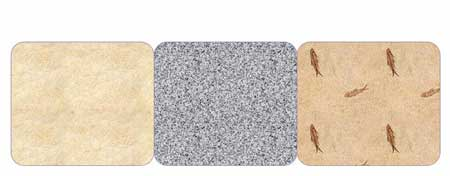
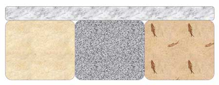
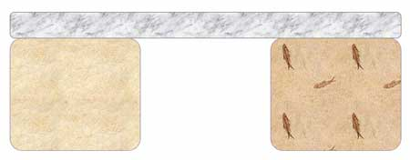

"... un système irrémédiablement complexe pourrait émerger par l'appropriation progressive de parties qui étaient initialement superflues mais qui finissent par devenir indispensables ...."
William A. Dembski 2004, p. 24.
Introduction
L'expression de Michael Behe « complexité irréductible » est, pour être franc, tout à fait ridicule — et voici pourquoi.
Premièrement, Behe croit que les systèmes « irréductiblement complexes » ne peuvent pas évoluer par des mécanismes darwiniens progressifs directs. Cependant, les processus génétiques standards produisent facilement ces structures. Il y a près d'un siècle, de tels systèmes ont été prédits, décrits et expliqués par le généticien lauréat du prix Nobel H. J. Muller en utilisant la théorie de l'évolution1.
Deuxièmement, le terme « complexité irréductible » est mal choisi. Les structures que Behe appelle « irréductiblement complexes » sont en fait réductibles. Pour ces raisons, contraint par l'éthique académique et la précision scientifique, je ne m'adresserai plus à ces structures sous le nom de « irréductiblement complexes ». À la place, j'utiliserai l'expression « complexité imbriquée de Muller » (MIC), une terminologie similaire à celle de Muller.
L'argument erroné de Behe
La MIC est un concept simple. Un système est MIC si sa fonction est perdue lorsqu'une partie est retirée2. Behe soutient que les systèmes MIC ne peuvent pas être produits directement par l'évolution progressive3. Mais pourquoi pas ? Le raisonnement de Behe se déroule comme suit :
- (P1) L'évolution progressive directe procède par l'ajout progressif de parties.
- (P2) Par définition, un système MIC manquant d'une partie est non fonctionnel.
- (C) Par conséquent, tous les ancêtres évolutifs directs progressifs possibles d'un système MIC doivent être non fonctionnels.
Bien sûr, l'argument de Behe est faux car la première prémisse est fausse : l'évolution progressive peut également procéder par le changement ou la suppression de parties. Nous avons donc la solution suivante, embarrassamment simple, au dilemme de Behe.
Le processus en deux étapes de Muller
Deux et seulement deux étapes de base sont nécessaires pour faire évoluer progressivement un système MIC à partir d'un ancêtre fonctionnel :
- ajouter une partie
- la rendre nécessaire
C'est aussi simple que cela. Après ces deux étapes, retirer la partie détruira la fonction, mais le système a été produit directement et progressivement à partir d'un ancêtre plus simple et fonctionnel. Et c'est exactement ce que Behe allègue être impossible.
En tant qu'explication scientifique, le processus en deux étapes de Muller est extrêmement général et puissant, car il est indépendant des spécificités du système en question. En fait, les deux étapes peuvent se produire simultanément, en un seul événement, voire en une seule mutation. La fonction du système peut rester constante pendant le processus ou elle peut changer. Les étapes peuvent être fonctionnellement bénéfiques (adaptatives) ou non (neutres). Nous n'avons même pas besoin d'invoquer la sélection naturelle dans le processus — la dérive génétique ou l'évolution neutre suffiront4. Le nombre de façons d'ajouter une partie à une structure biologique est pratiquement illimité, tout comme le nombre de façons différentes de modifier un système pour qu'une partie devienne essentielle. Les processus génétiques ordinaires peuvent facilement faire les deux.
Exemple 1 : Le pont en pierre
Un exemple clair du concept est donné par un pont en pierre. Considérons un « pont précurseur » rudimentaire fait de trois pierres. Ce pont enjambe la zone à traverser et est donc fonctionnel. Pour la première étape du processus en deux étapes de Muller, une partie est ajoutée : une pierre plate sur le dessus, couvrant toutes les pierres précurseures. Quoi qu'il en soit si cela améliore la fonctionnalité du pont est sans importance — cela peut ou ne peut pas l'être, le pont fonctionne toujours. Pour la deuxième étape du processus en deux étapes de Muller, la pierre du milieu est retirée. Voilà, nous avons un pont MIC, car la dernière étape a rendu la pierre du dessus nécessaire à la fonction.
Le pont précurseur : trois pierres.

Étape #1, ajouter une partie : la pierre du dessus.

Étape #2, la rendre nécessaire : retirer la pierre du milieu. Comme promis, nous avons maintenant un pont en pierre MIC. Aucune des trois pierres ne peut être retirée sans détruire la fonction du pont.

Exemple 2 : Comment manger du pentachlorophénol
Un système IC a évolué chez les bactéries au cours des 70 dernières années.
Notes de bas de page
1 : H. J. Muller a prédit et discuté des structures « irréductiblement complexes » de M. J. Behe dans deux articles différents, l'un en 1918 et l'autre en 1939. Cette prédiction a été faite bien avant que le matériel génétique ne soit connu ou que quiconque ait vu la structure d'une « machine moléculaire ».
"... ainsi une machine compliquée a été progressivement construite dont le fonctionnement effectif dépendait de l'action interdépendante de très nombreux éléments ou facteurs élémentaires différents, et beaucoup de caractères et facteurs qui, lorsqu'ils étaient nouveaux, n'étaient à l'origine qu'un atout, sont finalement devenus nécessaires parce que d'autres caractères et facteurs nécessaires ont par la suite changé de manière à dépendre des premiers. Il en résulte nécessairement qu'une chute ou même un léger changement dans l'un de ces éléments est très susceptible de perturber fatalement l'ensemble de la machinerie ; pour cette raison, nous devrions nous attendre à ce que très nombreuses, sinon la plupart, des mutations aboutissent à des facteurs létaux ..."
Muller 1918 pp. 463-464. (insistance dans le texte original)
Retour« V. Le rôle de l'interdépendance et de la diffusion des fonctions des gènes dans l'empêchement du véritable retour en arrière de l'évolution »
"... un processus ou une structure embryologique ou physiologique nouvellement apparu par mutation génétique, après s'être une fois établi (avec ou sans l'aide de la sélection), prend plus et plus tard part à l'ensemble complexe de l'interaction des processus vitaux. Pour que d'autres mutations qui apparaissent soient maintenant autorisées à rester, il suffit qu'elles fonctionnent en harmonie avec tous les gènes déjà présents, et, parmi ces mutations supplémentaires, certaines dépendront naturellement, pour leur bon fonctionnement, du nouveau processus ou de la structure en question. En étant ainsi enfin tissées, pour ainsi dire, dans le tissu le plus intime de l'organisme, le caractère une fois nouveau ne peut plus être retiré sans danger, et peut être devenu vitallement nécessaire."
Muller 1939 pp. 271-272.
2 : Behe a défini son usage de « complexité irréductible » :
« Par irréductiblement complexe, j'entends un système unique composé de plusieurs parties bien adaptées et interagissant qui contribuent à la fonction de base, dans lequel la suppression de l'une des parties fait cesser le système de fonctionner efficacement. »
Behe 1996 p. 39.
Retour"... 'irréductiblement complexe' signifie approximativement que si l'on retire un composant d'un système, la fonction est perdue ; ..."
Behe 2001 p. 686.
3 : Behe explique pourquoi il imagine que la « complexité irréductible » constitue un obstacle à l'évolution graduelle :
« Un système irréductiblement complexe ne peut pas être produit directement (c'est-à-dire en améliorant continuellement la fonction initiale, qui continue de fonctionner par le même mécanisme) par des modifications successives légères d'un système précurseur, car tout précurseur d'un système irréductiblement complexe qui manque d'une partie est par définition non fonctionnel. Un système biologique irréductiblement complexe, s'il existe une telle chose, serait un défi puissant à l'évolution darwinienne. »
Behe 1996 p. 39.
Retour« Les systèmes irréductiblement complexes semblent très improbables d'être produits par de nombreuses modifications successives légères de systèmes antérieurs, car tout précurseur qui manquait d'une partie cruciale ne pouvait pas fonctionner. La sélection naturelle ne peut choisir que parmi les systèmes qui fonctionnent déjà, donc l'existence dans la nature de systèmes biologiques irréductiblement complexes pose un défi puissant à la théorie darwinienne. »
Behe 2002.
4 : H. Allen Orr a expliqué l'explication de Muller sur la « complexité irréductible » dans plusieurs articles dans la Boston Review critiquant les écrits de Behe et de William Dembski. Orr a souligné les possibilités adaptatives dans le deux-étapes de Muller (c'est-à-dire l'amélioration de la fonction à chaque étape). Cependant, le mécanisme est plus général et ne nécessite même pas la sélection, un point que Muller lui-même a fait à l'origine, 50 ans avant que l'évolution neutre ne soit trouvée importante dans l'évolution moléculaire.
Retour« Un système irréductiblement complexe peut être construit progressivement en ajoutant des parties qui, bien qu'initialement seulement avantageuses, deviennent - à cause de changements ultérieurs - essentielles. La logique est très simple. Une partie (A) fait initialement un certain travail (et pas très bien, peut-être). Une autre partie (B) est ajoutée plus tard parce qu'elle aide A. Cette nouvelle partie n'est pas essentielle, elle n'améliore simplement les choses. Mais plus tard, A (ou autre chose) peut changer d'une telle manière que B devient maintenant indispensable. Ce processus continue alors que d'autres parties sont incorporées au système. Et à la fin de la journée, de nombreuses parties peuvent toutes être requises. »
Orr 1996"... l'évolution darwinienne graduelle peut facilement produire une complexité irréductible : tout ce qui est requis est que des parties qui étaient une fois seulement favorables deviennent, à cause de changements ultérieurs, essentielles. "
Orr 1997
Références
Behe, M. J. (1996) La boîte noire de Darwin : Le défi biochimique à l'évolution. New York, Touchstone.
Behe, M. J. (2001) « Reply to my critics: A response to reviews of Darwin's Black Box: The Biochemical Challenge to Evolution. » Biology and Philosophy 16:685-709.
Behe, M. J. (2002) « The challenge of irreducible complexity. » Natural History, 111(3):74.
Darwin, C. (1872) L'Origine des espèces. Sixième édition. The Modern Library, New York.
Dembski, W. A. (2004) « Irreducible Complexity Revisited. » Progress in Complexity, Information, and Design (PCID) 3.1.4, novembre. [PDF]
Muller, H. J. (1918) « Genetic variability, twin hybrids and constant hybrids, in a case of balanced lethal factors. » Genetics 3:422-499. [Texte gratuit, Genetics Online]
Muller, H. J. (1939) « Reversibility in evolution considered from the standpoint of genetics. » Biological Reviews of the Cambridge Philosophical Society 14:261-280.
Orr, H. A. (1996) « Darwin v. Intelligent Design (Again). » Boston Review, décembre 1996/janvier 1997. [Texte gratuit, Boston Review]
Orr, H. A. (1997) « Is Darwin in the Details?: H. Allen Orr Responds » Boston Review, février/mars 1997. [Texte gratuit, Boston Review]